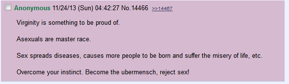
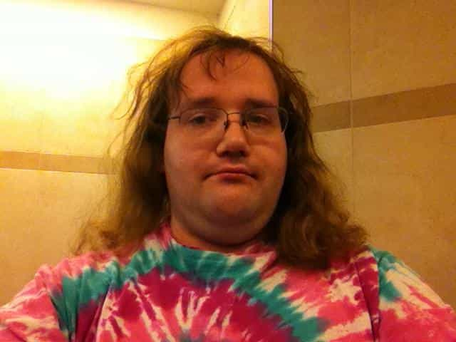
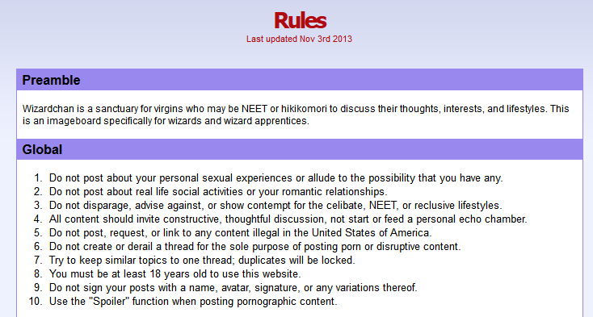

< < < Back
The Most Omega Place On The Internet – Return Of Kings
Imagine an omega loser that you went to high school with. He smelled like sour milk and piss, played with cards from some Japanese cartoon, and sweated whenever a woman came into contact with him. Those who didn’t outgrow such omeganess now post in various online forums with kindred spirits, refusing to become true men. One of these nerd-filled forums is wizardchan.org.
Wizardchan was founded on the principle that certain online users felt left out in online conversations about the good old pastimes of beer, bros, and pussy. Dissatisfied that other people were having the time of their lives, this website was born. The site even has its own terminology. Someone who is younger than thirty and a virgin is a “wizard apprentice” and a 30 year old who is still a virgin is a “wizard.” Yes, the users of this website actually strive to remain virgins. It is the complete opposite of the Roosh V Forum. An actual quote from the website:

Going by this information alone, what is the typical Wizardchan user like? He’s a virgin in his late teens to early twenties that doesn’t leave his house. He is into Japanese cartoons and/or some other omega shit like My Little Pony. He collects welfare or is supported by family members. He doesn’t even communicate with his own family members that he mooches off of. Also, most of the users suffer from some sort of psychological disorder and are prone to suicidal ideation. What the average user of wizard chan looks like:

Anyone who doesn’t meet these criteria is considered “normal scum.” Normal scum are people who go to work, get laid, and have a social life outside of the internet. Even the smelly, acne ridden Dungeons and Dragons geeks are considered “normal scum” according to them. Like homos and feminists, they view themselves as an “oppressed” minority. How are they oppressed? They are told to get a job, get laid, and function out in the real world like a grown man would.

Let’s take a look at some of their rules to get a look at their online community:
-
“Do not post about your personal sexual experiences or allude to the possibility that you have any.” Can anyone else say “sour grapes”? They throw hissy fits whenever someone mentions getting their dick wet. So, what happens when someone on their site finally does get lucky enough to lose their virginity? Most guys would pat him on the back for it. The same cannot be said for these bitter cunts. They screech that the user had “betrayed them” like jealous ex-girlfriends. Omega’s can’t even be happy for the ones that escape the omega lifestyle.
-
“Do not post about real life social activities.” These bitter cumrags don’t just want their users to remain virgins; they also want their users to be friendless losers as well. An alpha bro is someone that has your back. They’re the ones that you can count on to drive your drunken ass home after a night of partying at the club or to join you in getting shitfaced. Only an inhumane feminist would want to deprive a man of good alpha role-models.
-
“Do not disparage, advise against, or show contempt for the celibate, NEET, or reclusive lifestyles.” Yeah, no one can say anything against being a NEET(Not in Education, Employment, or Training). Back to what was stated earlier about the suicidal idealization; these users have had multiple threads about wanting to off themselves. It had gotten so bad that one of their admins had placed a warning under the site title with the Suicide Hotline numbers urging their own users to seek help. If these users actually had goals to strive for that wasn’t masturbating in their room for twelve hours or a bud to hang out with, their mental health may actually improve.
-
“All content should invite constructive, thoughtful discussion, not start or feed a personal echo chamber.” This particular rule seems like an oxymoron, doesn’t it? Their whole site is an echo chamber for the depressed socially inept. If an alpha male were to post openly on their site, he would be met with a dozen responses on how “normals won’t leave them alone.” This forum is like the male equivalent to a female relationship website. They just want a hugbox to coddle each other, instead of improving their lives.
Look at the omega zone. It’s a hellish dystopian filled with males who will never accomplish their goals. Remember that everybody has a choice in what they want to associate themselves with. You can choose to watch My Little Pony and choose to bitch on your computer about “normalshits”. You could also read some Bang and Day Bang. Learn some game and associate with those that have the same goals of being a better person. It’s your choice.
Read Next: Woman Abandons Her Family, Gets Paid $85,000


{kind=link}
{kind=link}
{kind=link}